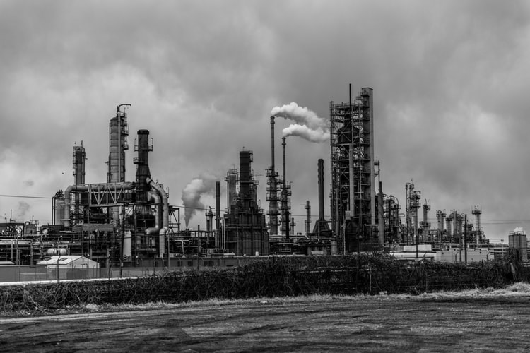

Indication
One of the most Discussed & Deadliest issue to human life is “Global Warming” which is caused due to a sudden increase in the levels of Green House gases which includes SO2, CO2, etc. These are the major reason for the sudden hike in the temperature
of the earth.
The evidence for rapid climate change is compelling: global temperatures are getting higher, oceans are warming, ice sheets are shrinking and the sea level is rising.

Causes
Certain gases in the atmosphere block heat from escaping. Long-lived gases that remain semi-permanently in the atmosphere and do not respond physically or chemically to changes in temperature are described as "forcing" climate change. Gases, such as water
vapor, which respond physically or chemically to changes in temperature are seen as "feedbacks."
Gases that contribute to the greenhouse effect include: water vapor, carbon dioxide, methane, nitrous oxide.
Consequences
Global climate is projected to continue to change over this century and beyond. The magnitude of climate change beyond the next few decades depends primarily on the amount of heat-trapping gases emitted globally, and how sensitive the Earth’s climate
is to those emissions.
It is predicted that temperatures will continue to rise, seasons will become frost-free, sea level will rise with 1-4 feet and the Arctic will become ice-free.

Solutions
1) Renewable energies : The first way to prevent climate change is to move away from fossil fuels. What are the alternatives? Renewable energies like solar, wind, biomass and geothermal.
2) Energy & water efficiency : Producing clean energy is essential, but reducing our consumption of energy and water by using more efficient devices (e.g. LED light bulbs, innovative shower system) is less costly and equally important.
3) Sustainable transportation : Promoting public transportation, carpooling, but also electric and hydrogen mobility, can definitely help reduce CO2 emissions and thus fight global warming.
4) Sustainable agriculture & forest management : Encouraging better use of natural resources, stopping massive deforestation as well as making agriculture greener and more efficient should also be a priority
5) Sustainable infrastructure : In order to reduce the CO2 emissions from buildings - caused by heating, air conditioning, hot water or lighting - it is necessary both to build new low energy buildings, and to renovate the existing constructions.
6) Responsible consumption & recycling : Adopting responsible consumption habits is crucial, be it regarding food (particularly meat), clothing, cosmetics or cleaning products. Last but not least, recycling is an absolute necessity for dealing with waste.